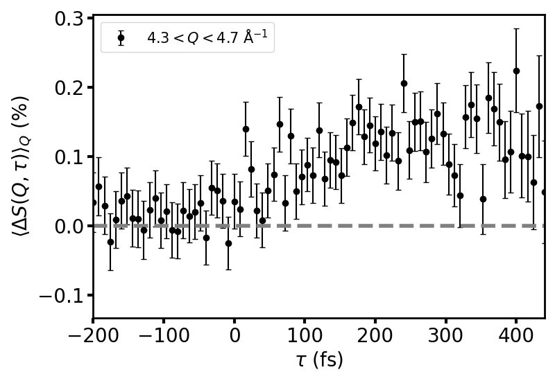
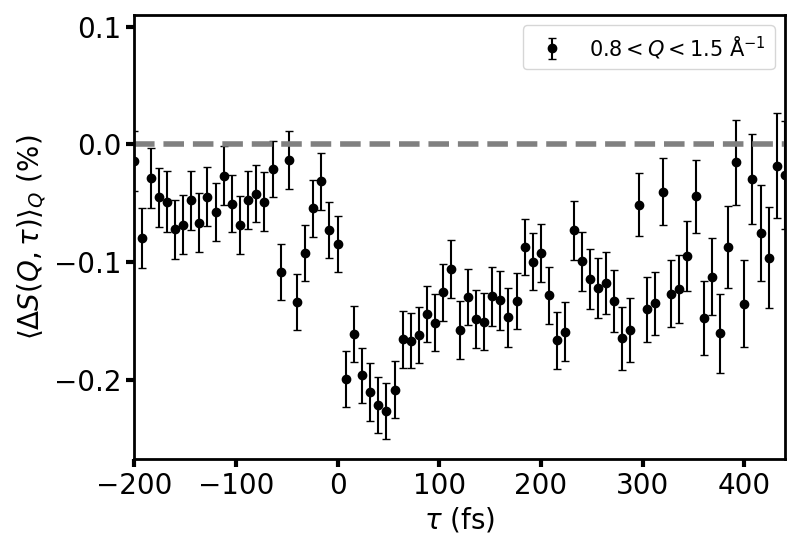
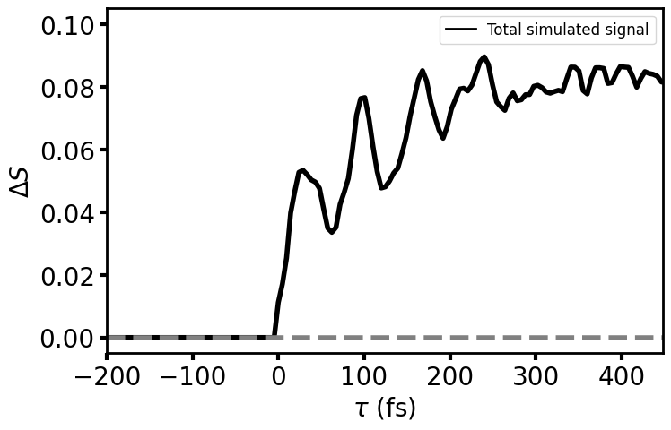
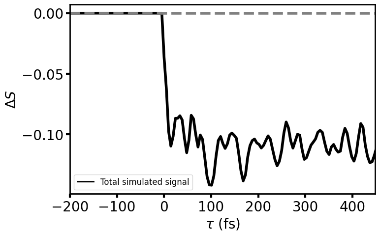

Why No Oscillations in the Data?
Q = 4.3–4.7 Å⁻¹
Q = 0.8–1.5 Å⁻¹
Experiment


Simulation


- 65 fs (513 cm⁻¹) oscillation in simulation
- Matches C–C=C $A_g$ deformation mode
- C–C torsion $A_u$ (168 cm⁻¹, 200 fs) and C–C=C deformation $B_u$ (293 cm⁻¹, 114 fs) thermally accessible